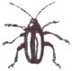
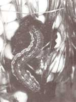
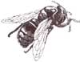

COVER STORY
Effective and nontoxic products to zap pesky bugs.
The philosophy behind organic gardening is hardly new to MOTHER readers, who've known about the benefits for years. However, interest has grown markedly in the mainstream. Many are finally joining the organic movement in order to rebel against additives in food, chemicals in the soil and water, pollutants in the air, and the dangerous pesticides regularly sprayed. The balance of nature has been precariously disturbed as the number of good and necessary bugs has been diminished, and to make matters worse, many of the harmful insects have developed resistance to common pesticides. But there's good news...
Today's scientists are discovering more and more plants that produce natural bactericides, fungicides, and insecticides. In fact, many nontoxic household products are considered effective in the war against gardening pests. Below are the acceptable organic controls that gardeners find most effective today.
Household detergents: Mix these insecticides right in your kitchen.
1) USDA recommendation: Mix one teaspoon of liquid dishwashing detergent with one cup of vegetable oil. Shake vigorously to emulsify and add to a quart of tap water. Use at 10-day intervals as an all-purpose spray for white flies, spider mites, aphids, and various insects on carrots, celery, cucumbers, eggplants, peppers, and others. We've used it on evergreens and other ornamentals. Note: Test on a single plant first, because it may cause tip burn. This is a contact insecticide, so spray mix directly on the pest.
2) Liquid detergent-alcohol spray:
Mix one teaspoon of liquid dishwashing detergent plus one cup of rubbing alcohol in one quart of water. Test on a few leaves first to make sure no harm is done to sensitive plants. Spray top and bottom sides of leaves; or if plant is small and potted, invert it in a large pan of solution (holding soil ball securely) and gently swish back and forth. Repeat in seven days.
3) Liquid detergent-hot pepper spray:
Steep three tablespoons of dry, crushed hot pepper in 1/2 cup hot water (covered) for half an hour. Strain out the particles of peppers, and then mix solution with the liquid detergent formula mentioned above. Good for a number of insects on both indoor and outdoor plants. Note: Apply to plants outdoors. Do not use on windy days. Avoid breathing fumes, which can be irritating to nose and eyes. You can substitute hot Tabasco sauce or Louisiana hot sauce for hot pepper.
Pyrethrin: This natural insecticide derived from the pyrethrum plant (Chrysanthemum cinerariaefolium). Along with pyrethroid, its synthetic substitute, it is highly effective against a wide range of insects. Each should be used according to manufacturer's directions.
Lime sulfur: This old-timer, still used by both organic and nonorganic gardeners, is applied during the dormant period. Kills most species of mites as well as mite eggs and those of many other insects. Lime sulfur also has fungicidal value and can be used on fruit trees as well as ornamentals. Note: Lime sulfur applied to plants near the house will stain the paint. Apply cautiously near buildings.
Sabadilla: Made from seeds of a South American lily. Used for squash bugs and stink bugs. Irritating to eyes and lungs if care is not taken. Use according to manufacturer's directions.
Garlic and onions: Grind up raw onions or garlic into a puree. Soak in warm water overnight and strain. Liquid can be sprayed on roses, fruit trees, and flowers. Kills aphids and apple borers. Scrape off any loose bark on the trunk and swab liquid on. Many gardeners mix onion water and wood ashes and paste mixture on tree trunks.
Ryania: Made from ground stems and roots of a South American shrub. Controls European corn borer and other worms. See directions on container.
Tomato leaves, crushed: To avoid chemical sprays, try using crushed tomato leaves for leaf-spot diseases. Tomato leaves contain solanine, a chemical that has an inhibiting effect on black spot fungus. Grind two cups of leaves to a puree. Add five pints of water and one ounce of cornstarch. Keep refrigerated.
Tobacco water: Cigar and cigarette butts will kill worms in the soil of houseplants. Mix a solution of tobacco and water so that it is the color of brown tea; pour on the soil. Don't let anyone drink it by mistake! The solution kills fungus gnats, symphylids, centipedes, root lice, and other underground pests-and it could kill you.
If you have aphids or other insects in your terrarium or dish garden, ask a friend who smokes to blow cigarette smoke into the glass and then seal the top. The smoke knocks plant lice for a loop.
Snuff: For tiny flies or worms in the soil of house plants, try sprinkling snuff on the surface. Note. Do not use homemade tobacco remedies on tomatoes, peppers, eggplants, and other members of the Solanum family. It could spread tobacco virus to these plants.
Retenone: An old remedy for killing Mexican bean beetles. It is produced from derris, a plant found in Central and South America. Kills aphids, thrips, and chewing insects on contact. Note: Toxic to fish and nesting birds.
Hot pepper: To discourage cats, dogs, many insect pests, and snails from munching, dust powdered hot pepper or a spray of hot pepper sauce on plants.
Oil and sulfur sprays: Petroleum oils (of organic derivation) have been used successfully for killing insects for over 200 years. Apply only on "hard" or woody plants. There are two types:
1) Dormant oil should be used only when plants are dormant-in winter or early spring.
2) Summer oil should be used during the growing season and restricted to woody plants. Some oil sprays can be applied in either summer or winter.
Miscible oil sprays kill insects and eggs such as over-wintering leaf rollers and aphid and mite eggs. They also kill scale insects and adult mites. Dilute with water according to manufacturer's directions. The oils cause little or no harm to most beneficial insects, and resistance to sprays does not build up with oils.
Talcum powder : Effective against flea beetles and corn ear worm. Lightly dust leave surfaces after every rain.
Soaps as insecticides: Soapsuds are ideal for killing aphids. Many home gardeners prefer vegetable- or plant-based soaps as effective aphicides.
Rhubarb leaves: Boil one pound of chopped leaves in one quart of water for 30 minutes. Strain and use as a spray against aphids and other pests.
Garlic and red-pepper spray:
Grind up a large bulb of garlic (or a large onion). Add one tablespoon of ground cayenne pepper and one quart of water. Steep for one hour. Strain liquid into a sprayer or watering can and refrigerate remainder in a tightly covered jar. It will be potent for several weeks, and is effective on all kinds of chewing and sucking insects.
Spearmint spray: Put into a blender one cup of chopped spearmint leaves, one cup of green onion tops, and 1/2 cup of chopped hot-red pepper. Add 1/2 cup of water to assist in blending. Pour solution into a gallon of water. Add 1/2 cup of liquid detergent (preferably lemon-scented). Dilute by adding 1/2 cup of mixture to a quart of plain tap water.
If the plant is small, dunk it in this solution, otherwise strain it and spray on. Effective on all chewing insects.
Editor's Note: Adapted from The Green Thumb Garden Handbook, published by Lyons & Burford (31 W 21st St., NY, NY 10010; 212/620-9580.). The price is $16.95.
ORGANICALLY SPEAKING: The best reason to garden organically: clean, unsprayed, absolutely fresh fruits and vegetables that are picked only when they reach the perfect degree of ripeness.
Apple Maggots On the Run
Here is a brew that will trap one of the worst enemies of your apple crop: the apple maggot. Mix one part molasses with nine parts water, then add yeast to produce fermentation. Pour this mixture into wide mouth jars and hang in nearby trees.
Banana Peels
Chop banana peels and add into soil when you transplant tomatoes and green peppers. This will ensure very strong trunks and stems. Banana peels contain 3.25% phosphorus and 41.76% potash. They're also an excellent fertilizer for roses, but use sparingly; two or three peels per bush at a time is about right.
Carrots
Carrots like to grow in loose, sandy soil and if you have clay soil you will find carrots very challenging. In Midwest Gardening, Denny McKeown offers an excellent solution: "Simply dig a trench 12" deep and the width of your shovel. Mix sand and peat humus with some of the existing soil (about 50/50), and backfill the trench. Then plant your carrot seeds."
Daddy Longlegs
Most active at night, daddy longlegs (also known as harvestman), prey on aphids, mites, leafhoppers, and other garden insects.
Eggshells
Not only do they add lime, nitrogen, and phosphorus to the soil, eggshells also help to foil cutworms when crushed and sprinkled around seedlings.
Fireflies
In the larval stage the firefly can be considered of material benefit to man. The growing juveniles eat animals that feed on the leaves. Their favorite foods are the small snails they share living quarters with in decaying wood and soil.
Gophers Gone
If you have a problem with gophers digging in your lawn try this: put two or three bulbs of garlic, several chili peppers, and some water in your blender and blend well. Pour this down some of the gopher holes and rinse with a strong stream of water from the hose.
Honeybees and Hay Fever
There's a theory that hay fever sufferers who eat honey produced within a few miles of their homes will find that it alleviates their misery. The pollen of the flowers and weeds, which the honeybee makes into honeycomb, is believed to provide a natural antitoxin.
Insects Can't Slip By
Some insects that damage fruit trees crawl from the soil to the branches to lay their eggs. They can be stopped by wrapping the trunk with six to eight inches of tape or grease-resistant paper and applying Vaseline or other grease to the tape. Don't put Vaseline directly on the tree-it may cause damage.
Japanese Black Pine
This beautiful pine grows somewhat irregularly. It is an excellent choice if you have a garden near a windy seashore because it is resistant to both wind and salt spray. I have also found it to be a good choice for dry, windy Oklahoma.
Kiwi Fruit
Unless pruned quite heavily, kiwi will become a tangled mass. Prune after the leaves drop. Removing the weaker canes will encourage the stronger ones to be more productive.
Leaf Mold
Shred leaves and mix with grass clippings to make a good mulch. It will decompose rapidly and give mulched plants the benefits of their many nutrients.
Mice
Mice sometimes completely girdle young fruit trees. Painting with standard tree wound paints is helpful. Or you might try covering the wounds with white corn syrup and then wrapping with aluminum foil.
Newspaper Mulch
To make newspaper mulch for vegetables: place several layers between plant rows, and keep them wet so they won't blow around. Also weigh them down with a few clods of earth. Weeds won't sprout underneath, and when the papers decompose, they enrich the soil.
Owls
The tiny screech owl--more often heard than seen-patrols moonlit yards for insects and mice. Lizards, salamanders, and worms may also scooped up during the owl's nightly forays. The barn owl is probably the most important predator of rats and mice in populated areas, rivaling the house cat in importance.
Painting
Painting the trunks of fruit trees with Tabasco sauce helps deter rabbits and mice.
Quicker Decomposition
Compost will break down and decay faster if the compost heap is placed in a shady location.
Red Spider Mites
These little peskies seem to appear suddenly, especially on tomato leaves, when really hot weather hits. Organic Plant Protection (Rodale Press) states: "A spray of two percent oil of coriander will kill the spider mite; a spray of anise oil should do as well." Frequent spraying with plain water will also help.
Sea Shell Mulch
Save those sea shells you collected at the beach and turn them into mulch. Face the cups of the shells upwards for those plants that need high humidity. Each time you water, the cups will fill with water and then evaporate into the air around the plant. Covering the top of the pot soil with small shells can also be very attractive.
Thinning
The sooner excess fruit is removed after flowering, the more likely the remaining fruit will improve in size and quality. A good general rule of thumb for apricots, plums, apples, Asian pears, nectarines, and peaches is to thin them twice as far apart as the diameter you want them to be at maturity.
Umbel
Umbels are the kind of blossom that a certain group of plants produces ("umbel" means umbrellalike in shape). These plants include carrots, parsley, coriander, dill, caraway, anise, fennel, angelica, and chervil.
Plant umbels in moist, rich soil where they will be able to enjoy much shade during the hot months of summer.
Vetch
Vetches are used for hay, green manure, pasture crops, silage, and as a cover crop for orchards. They are also valuable for renewing soil fertility. Vetches require a cool growing season. The bacteria left in the soil from vetch roots serves as an inoculant and is beneficial to the growth of peas.
Watch for a Cloudy Day
Bright sun can hurt newly planted seedlings, so always try to transplant them during an overcast day in late afternoon or evening. Shading them the first day or two is also helpful if the sun comes out.
Xerophytes
Plants especially adapted to withstand long periods of drought or to grow where supplies of water are scare are called xerophytes. Included among these plants are cacti and such succulents as aloes, cotyledons, crassulas, echeverias, haworthias, sedums, and sempervivums. Many of these store water in their fleshy leaves and stems.
Yarrow
Yarrow has long been acclaimed for its invaluable qualities in companion planting, adding strength to herbs and assisting in the battle against insect pests. Plant yarrow in the same beds with mint, chives, thyme, parsley, basil, oregano, or any other culinary or tea herb. Or plant it in your flower bed to add beauty and protection.
Zigging and Zagging
Togetherness is one way to practice companion planting-get the neighbors right in there next to each other.
Plant zig-zag rows with onions and beets or carrots and tomatoes tucked into one another. Or use the techniques of intercropping by planting several companions in the same row, one of which might be a protective herb or flower.
Editor's Note: You can end these and other gardening tips in In Nature's Hands available from Taylor publishing for $15.95 postpaid (800/275-8188).
|
 |
 |
|
|
 |
|
|